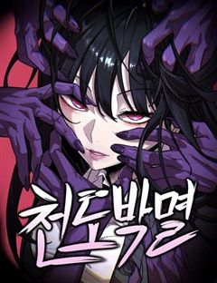

작두 같은 웹툰 추천

작두 · 232 / POGO
작두 재밌게 봤다면 이 웹툰들도 좋아할 거예요. 같은 장르이면서 신화, 소년왕도물, 미친작화 같은 요소가 겹치는 작품을, 겹치는 요소가 많은 순서로 20개 골랐어요.
2026-09-29 기준 · 네이버웹툰·카카오웹툰·레진코믹스 · 성인 작품 제외
내 취향으로 직접 골라 추천받기 →-
1
 네이버웹툰
네이버웹툰이매망량
사람을 해치는 악귀 이매망량이 본격적으로 활개를 펼치기 시작한 조선, 전 국토 곳곳에 고통과 신음이 끊이질 않는다.
신화소년왕도물동양인외존재판타지액션네이버웹툰에서 보기 → -
2
 네이버웹툰
네이버웹툰카루나
돈과 과학이 교리인 집단 ‘뱅크’. 그들의 시설에서 자란 라만은 평생 잡역부로 살다 죽을 운명이었다. 그러던 어느 날, 악마와 얽힌 사건 속에서 뱅크가 철저히 부정해 온 ‘신의 힘’ 아스트라를 각성한다. 하루아침에 운명이 뒤집힌 라만은 악마를 사냥하…
신화소년왕도물인외존재성장물판타지액션네이버웹툰에서 보기 → -
3
 네이버웹툰
네이버웹툰신의 탑
자신의 모든 것이었던 소녀를 쫓아 탑에 들어온 소년 그리고 그런 소년을 시험하는 탑
소년왕도물세계관이능력성장물판타지액션네이버웹툰에서 보기 → · 신의 탑 같은 웹툰 → -
4
 네이버웹툰
네이버웹툰그림으로 승부
이계가 침공하는 세계, 그리고 히어로가 맞서는 세상. 오직 ‘그림’만 잘 그리는 약자 김군은 어린 시절부터 그려온 상상의 히어로 ‘마틴’을 현실로 소환한다. 힘이 아닌 창의력과 예술적 열정으로 세상을 지키는 소년의 성장 판타지 액션
소년왕도물미친작화이능력성장물판타지액션네이버웹툰에서 보기 → -
5
 네이버웹툰
네이버웹툰보이드맨
신들이 지배하는 포스트 아포칼립스. 가족을 앗아간 신을 죽이기 위해, 난 죽음으로 들어갔다. “공허여, 내게 힘을 빌려줘. 신을 죽일 수 있는 힘을...!”
신화세계관인외존재성장물판타지액션네이버웹툰에서 보기 → -
6
 네이버웹툰
네이버웹툰백년게임
"당신의 게임은 여기까지군요" 백 년마다 열리는 소원 그 이상을 이뤄주는 대회, 최종 우승자는 단 한 명. 소년 한시준, 가족을 구하기 위해 모든 것을 걸고 치열한 전투에 뛰어든다.
신화소년왕도물세계관성장물판타지네이버웹툰에서 보기 → -
7
 네이버웹툰
네이버웹툰염라강림
지옥이 망했다. 피가 흘러야 할 황천에는 맑은 물이 흐르고 망자들을 끓이던 솥은 차갑게 식은지 오래다. 은퇴한 염라대왕은 자신의 행복을 위해 윤회의 길을 택하고자 하지만, 혼란스러워진 지옥과 사라진 자신의 후임 털보로 인해 윤회의 길을 걸을 수 없게…
신화동양인외존재판타지액션네이버웹툰에서 보기 → -
8
 네이버웹툰
네이버웹툰불로불사로 산다는 것은
공교회의 사제 로베르타는 북쪽 끝에 있는 벽지, 디트마르셴의 주임 사제로 발령받는다. 전임자가 실종된 사건이 벌어진 직후 주어진 자리이기에, 로베르타는 경계를 품고 디트마르셴 공작 ‘울리히’에 관해 알아간다. 소문에 의하면 그는 300년 이상 영주로…
신화세계관인외존재판타지액션네이버웹툰에서 보기 → -
9
 네이버웹툰
네이버웹툰세계멸망전
천마, 헌터, 거대 로봇, 마왕, 초인. 각 세계의 존망을 걸고 한자리에 모인 최강자들. 패배의 대가는 오직 세계의 멸망뿐인 생존 전쟁 속, 유일하게 아무런 능력도 없는 '일반 세계' 대표들이 끌려온다. 규격 외 괴물들의 압도적인 무력에 짓밟히기 직…
미친작화세계관이능력인외존재판타지액션네이버웹툰에서 보기 → -
10
 네이버웹툰
네이버웹툰사람의 탈
탈은 예술, 춤은 무술! 천대받는 탈춤광대 ‘봉산’은 스승이 남긴 지도를 따라 왕이 되려는 괴물 호랑이 ‘사풍흑호’를 막기 위해 전설 속의 '사람의 탈'을 찾아 모험을 떠나게 되는데 …
소년왕도물동양인외존재성장물판타지네이버웹툰에서 보기 → -
11
 네이버웹툰
네이버웹툰붉은 이정표
세상의 평화를 유지하던 최강의 도깨비 집단 '홍혜.' 그러던 어느 날 동료의 배신으로 도깨비 '린'은 홍혜와 친구들 모두를 잃게 된다. 분노로 가득 찬 그는 홍혜의 최강전력 '검은 귀신' 으로서 복수를 향해 길을 떠난다.
동양세계관이능력인외존재판타지액션네이버웹툰에서 보기 → -
12
 네이버웹툰
네이버웹툰조선야차
"조선의 개가 되어라, 어명이다." 한순간에 깨진 평화. 왕의 부름에 야차가 된 두 사람, 얘네한테 조선의 운명을 맡겨도 되는걸까...?
동양이능력인외존재판타지액션네이버웹툰에서 보기 → -
13
 네이버웹툰
네이버웹툰사시미 한 자루로 아카데미를 씹어먹음
‘베면 잘릴 것입니다.’ 전국 최고의 칼잡이라고 불리던 내가 과금 몇 번 해본 모바일 게임에 떨어졌다. 무려 '검신(劍神)의 가호'를 부여받고⋯! 그런데⋯ 사용할 수 있는 무장이 고작 사시미뿐이라고? 하루에 단 1분. 나는 사시미로 검성이 된다.
세계관이능력인외존재성장물판타지네이버웹툰에서 보기 → -
14
 네이버웹툰
네이버웹툰배드 본 블러드
인류의 보금자리는 더는 지구가 아니며, 성간비행은 상식이고, 기계가 피와 살을 대체하는 시대. 하층 구역 출신의 루카는 열다섯이 되었고, 선별검사 적성은 ‘근위대’였다.
미친작화세계관성장물판타지액션네이버웹툰에서 보기 → -
15
 네이버웹툰
네이버웹툰검술명가의 네크로맨서
대륙을 공포로 몰아넣었던 최강의 네크로맨서 아키몬드. 그는 영웅 베르켈 라인란트의 검에 목숨을 잃는다. 그리고 200년 후, 어느 가문의 아기로 태어나 첫 마디를 뱉는다. “어둠의 문지기와 하수인 그리고 병사들이여, 내 명을 받들라!“
미친작화세계관성장물판타지액션네이버웹툰에서 보기 → -
16
 네이버웹툰
네이버웹툰쿠베라
신의 이름을 가진 소녀 쿠베라 리즈. 15세 생일에 외출에서 돌아오다가 초토화되어버린 마을을 목격하게 되는데..! 신, 수라, 마법사들 사이에서 펼쳐지는 소속불명 장르 혼합 판타지.
신화세계관인외존재판타지네이버웹툰에서 보기 → · 쿠베라 같은 웹툰 → -
17네이버웹툰
마탑의 문제아들
백탑의 마탑주 오스카 세이지와 백탑의 마법사들. 인류의 미래를 위해 목숨을 비롯한 모든 것을 바쳤다. 그로부터 20년 후. 오스카 세이지가 다시 눈을 떴을 때, 창문에 비친 건 기초 마법밖에 쓰지 못하는 1레벨 마법사. 그리고 4대 마탑 퇴출 위기를…
세계관이능력성장물판타지액션네이버웹툰에서 보기 → -
18

네이버웹툰천도박멸
17세 고등학생 박태웅, 모종의 일로 죽음을 겪게 된 그의 앞에 펼쳐진 일들은 그의 인생의 판도를 뒤흔들어 놓는 굉장한 사건들이 된다.
소년왕도물세계관이능력판타지액션네이버웹툰에서 보기 → -
19
 네이버웹툰
네이버웹툰황제의 검
정난의 변에서 간신히 살아난 주윤문, 마교 천하제일 천마(天魔)와 소림사 육조 혜능(慧能)을 몸 안에 받아 천마서생 '파천'으로 재탄생하게 되는데… 절대지존을 향한 파천의 새로운 이야기가 시작된다!
신화동양인외존재성장물액션네이버웹툰에서 보기 → -
20
 네이버웹툰
네이버웹툰환생좌
신의 심심함을 만족시키기 위해 시작된 이면세계, 그로 인해 멸망 직전 위기에 처한 인류는 마지막 생존자 중 한 명인 '강한수'를 과거로 보내 미래를 바꾸려 한다. "너희가 가장 믿어야 할 것은 자신의 능력이다. 쓸모없으면 반드시 버려지기 마련이지"
신화이능력인외존재판타지액션네이버웹툰에서 보기 →